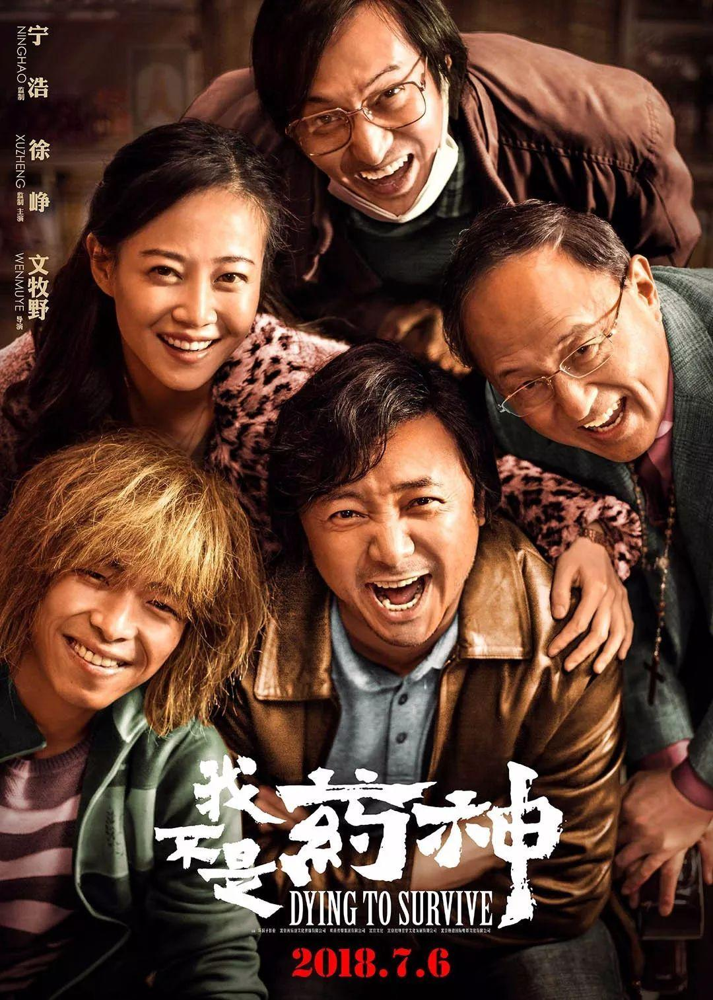
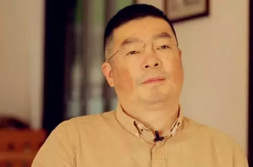
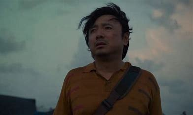

电影介绍

《我不是药神》是由文牧野执导，宁浩、徐峥共同监制， 徐峥、周一围、王传君、谭卓、章宇、杨新鸣等主演的剧情片。
该片讲述了神油店老板程勇从一个交不起房租的男性保健品商贩，一跃成为印度仿制药“格列宁”独家代理商的故事
剧情方面：
该影片属于真实事件改编的。影片中的主人公陆勇是底层人物的代表， 他的设定可谓是糟糕透顶来形容： 日子过得窝囊， 开的神油店没有生意，爱打老婆， 老婆跟有钱人跑了并要走儿子的抚养权，自己的父亲病危却凑不齐医药费……如此糟糕的生活直到有一天一位白血病人来到这请求他从印度偷渡仿假药开始有了变化。一开始的陆勇卖药只是为了赚钱，赚了钱后害怕被抓而选择停止卖药。后面吕受益因为没药吃而病逝后，陆勇真正了解到了白血病人有多么艰难， 吃不起药有多么痛苦，义无反顾的选择了重新卖药，药的价格比之前便宜不说，甚至还搭上了自己的厂子亏本卖药。突出了小人物大英雄的主题。
精彩视频
主要角色
-

原型：陆勇
无锡人陆勇是名白血病患者，也是一位企业家，许多白血病患者称他为“药神”，因此他也被认为是《我不是药神》的原型。2002年，陆勇被查出患有白血病，随后开启他漫漫寻药之路，为自己的同时也帮助病友，他也通过网购的信用卡为很多病友代购了这种药物，被称为抗癌药“代购第一人”。一直觉得自己在做好事的陆勇，2013年竟因涉嫌贩卖“假药”，被警方带走，之后千余名白血病病友签名为陆勇求情，最终有关部门“撤回起诉”。
-

角色：程勇
困顿的中年男性保健品商贩，经营惨淡，他铤而走险，后成为印度仿制药“格列宁”的独家代理商，更被病友冠以“药神”称号。他并没有什么野心，只是想赚点钱，留住孩子的抚养权，开好自己的神油店仅此而已。而当真切地进入到白血病人这个群体后，他的蜕变和成长是惊人的，即使为此陷入牢狱，也要尽自己地所能救助每一个病人。